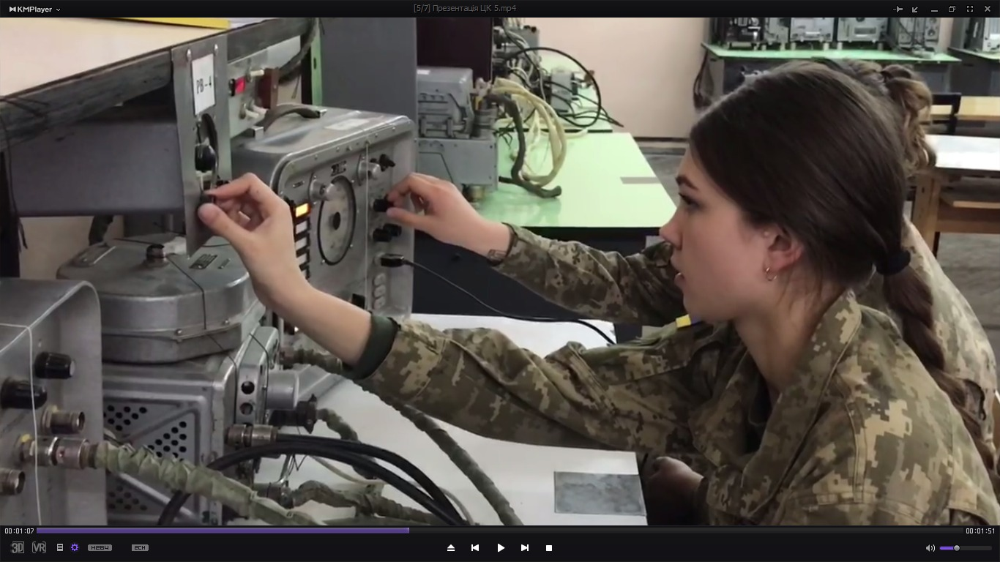
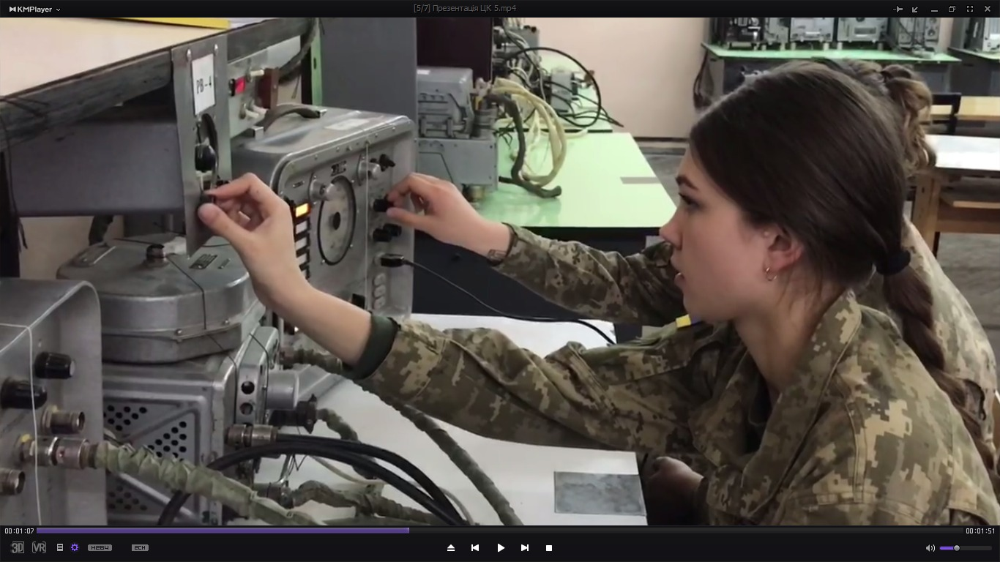

Відділення підготовки конструкції та експлуатації авіаційної техніки Військового коледжу сержантського складу Харківського національного університету Повітряних Сил
До складу відділення входять наступні циклові комісії:
Відділення підготовки конструкції та експлуатації авіаційної техніки забезпечує організацію навчально-виховного процесу та підготовку здобувачів фахової передвищої освіти за технічними напрямками,
пов’язаними з експлуатацією та обслуговуванням авіаційної техніки, авіаційного обладнання та двигунів, систем озброєння, радіоелектронного обладнання та безпілотних авіаційних систем та комплексів.
Основні напрямки підготовки
"Технічне обслуговування військових літаків, вертольотів та авіадвигунів"
"Авіаційне озброєння"
"Експлуатація радіоелектронного обладнання літаків, вертольотів і авіаційних ракет"
"Експлуатація авіаційного обладнання"
"Безпілотні авіаційні системи та комплекси"
Циклові комісії
Циклова комісія літаків, вертольотів та двигунів
Підготовка з будови, технічної експлуатації, діагностики та обслуговування авіаційної техніки.
Відділення підготовки конструкції та експлуатації авіаційної техніки
Циклова комісія літаків, вертольотів та двигунів
Циклова комісія літаків, вертольотів та двигунів здійснює підготовку авіаційних фахівців
за освітньо-професійною програмою
«Технічне обслуговування військових літаків, вертольотів та авіадвигунів».
Комісія забезпечує підготовку інженерно-технічного складу для авіаційних бригад
Повітряних Сил Збройних Сил України.
Загальна інформація
Скорочена назва: ЛВД
Належність: Відділення підготовки конструкції та експлуатації авіаційної техніки
Начальник циклової комісії:
спеціаліст вищої категорії,
підполковник Хрістов Валерій Олексійович
Склад: 4 особи
(2 старших викладача, 2 викладача)
Основні навчальні дисципліни
Конструкція та технічне обслуговування повітряних суден
Конструкція та технічне обслуговування силової установки повітряних суден
Експлуатація та ремонт авіаційної техніки
Конструкція авіаційної техніки
Теорія авіаційних двигунів
Основи аеродинаміки повітряних суден
Опір матеріалів
Теоретична механіка
Матеріалознавство та технологія обробки деталей
Практична підготовка
Практична підготовка здійснюється під час практичних занять,
аеродромної практики та військового стажування
в авіаційних бригадах Повітряних Сил Збройних Сил України.
Матеріально-технічна база
Спеціалізовані аудиторії літакового та вертолітного напрямку
Макети авіаційних двигунів, агрегатів систем, злітно посадкових приладів
Зразки паливно-мастильних матеріалів
Тісна співпраця з керівним складом інженерно-авіаційної служби
авіаційних бригад державної авіації України
Компетентності випускника
Підготовка повітряного судна до виконання бойових завдань
Виконання ремонтно-відновлювальних робіт
Виконання регламентних і періодичних робіт
Зберігання авіаційної техніки
Сезонне обслуговування авіаційної техніки
Посади та місця служби
Старший механік повітряного судна
Технік групи регламенту та ремонту літаків
Технік групи регламенту та ремонту авіаційних двигунів
Технік групи регламенту та ремонту засобів наземного обслуговування і планера
Бортовий механік
Місця служби: авіаційні ескадрильї, техніко-експлуатаційні частини, групи аварійного покидання
Відділення підготовки конструкції та експлуатації авіаційної техніки
Циклова комісія комплексів авіаційного озброєння
та радіоелектронного обладнання
Циклова комісія комплексів авіаційного озброєння та радіоелектронного обладнання
провадить освітню діяльність за освітньо-професійним ступенем
фаховий молодший бакалавр за спеціалізаціями
«Авіаційне озброєння» та
«Експлуатація радіоелектронного обладнання літаків, вертольотів і авіаційних ракет».
Загальна інформація
Скорочена назва: АОз та РЕО
Належність: Відділення підготовки конструкції та експлуатації авіаційної техніки
Начальник циклової комісії:
спеціаліст вищої категорії,
підполковник Березанський Олександр Григорович
Склад: 5 осіб
(2 старших викладача, 3 викладача)
Спеціалізація «Авіаційне озброєння»
Здобувачі освіти опановують навички обслуговування новітнього авіаційного
озброєння, що застосовується на військових літаках та вертольотах,
у тому числі озброєння, переданого Україні західними країнами-партнерами.
Підготовка фахівців з експлуатації та ремонту радіозв’язкового,
радіонавігаційного, радіолокаційного обладнання та систем
радіоелектронної боротьби.
Основні дисципліни (Авіаційне озброєння)
Експлуатація та військовий ремонт авіаційного озброєння
Авіаційні боєприпаси
Авіаційна зброя та установки озброєння
Авіаційні прицільні системи
Авіаційні керовані засоби ураження
Основні дисципліни (Радіоелектронне обладнання)
Електротехнічні матеріали авіоніки
Радіоелектронні системи
Бортові радіолокаційні системи
Бортові системи радіозв’язку
Бортові радіонавігаційні системи
Організація технічної експлуатації радіоелектронного обладнання
Практична підготовка та стажування
Практична підготовка здійснюється на практичних заняттях,
під час аеродромної практики та військового стажування
в авіаційних бригадах Повітряних Сил Збройних Сил України.
Матеріально-технічна база
Спеціалізовані аудиторії за напрямками підготовки
Макети авіаційних засобів ураження та озброєння
Макети радіоелектронного обладнання повітряних суден
Інформаційні стенди та навчальні матеріали
Програмні імітаційні моделі та симулятори
Компетентності випускника
Аналіз будови та принципів дії комплексів і систем
Підготовка авіаційної техніки до виконання бойових завдань
Використання вимірювальних приладів для діагностики
Технічне обслуговування та ремонт авіаційної техніки
Посади та місця служби
Спеціалізація – "Авіаційне озброєння"
Старший механік обслуги обслуговування авіаційного озброєння
Старший механік групи регламенту та ремонту авіаційного озброєння технічної експлуатаційної частини авіаційної техніки
Технік обслуги обслуговування авіаційного озброєння
Технік групи регламенту та ремонту авіаційного озброєння технічної експлуатаційної частини авіаційної техніки
Спеціалізація – "Експлуатація радіоелектронного обладнання літаків, вертольотів і авіаційних ракет"
Старший механік обслуги обслуговування радіоелектронного обладнання
Старший механік групи регламенту та ремонту радіоелектронного обладнання технічної-експлуатаційної частини авіаційної техніки
Технік обслуги обслуговування радіоелектронного обладнання авіаційних
Технік групи регламенту та ремонту радіоелектронного обладнання технічної-експлуатаційної частини авіаційної техніки
Місця служби: Авіаційні ескадрильї; Технічно-експлуатаційні частини авіаційної техніки; Технічні позиції підготовки ракет.
Відділення підготовки конструкції та експлуатації авіаційної техніки
Циклова комісія авіаційного обладнання та безпілотних авіаційних комплексів
Циклова комісія авіаційного обладнання та безпілотних авіаційних комплексів
здійснює підготовку авіаційних фахівців за освітньо-професійними програмами
«Експлуатація авіаційного обладнання військових літаків та вертольотів» та
«Безпілотні авіаційні комплекси оперативно-тактичного, оперативного та стратегічного класів».
Комісія готує технічний склад для авіаційних бригад Повітряних Сил Збройних Сил України.
Загальна інформація
Скорочена назва: АО та БпАК
Належність: Відділення підготовки конструкції та експлуатації авіаційної техніки
Начальник циклової комісії:
спеціаліст вищої категорії,
підполковник Чечин Олександр Анатолійович
Склад: 4 особи
Спеціалізація «Авіаційне обладнання»
Прибори та авіаційне обладнання повітряних суден
Розвідувальне обладнання повітряних суден
Системи автоматичного керування повітряних суден
Навігаційні системи повітряних суден
Експлуатація авіаційного обладнання
Спеціалізація «Безпілотні авіаційні комплекси»
Інформаційні технології у вбудованих системах
Цифрова обробка даних
Конструкція безпілотних повітряних суден
Безпілотні авіаційні комплекси
Бойове застосування безпілотних авіаційних комплексів
Практична підготовка
Практична підготовка здійснюється на практичних заняттях та в аудиторіях
з використанням сучасних зразків авіаційної техніки і обладнання.
Практика та стажування проходять у бойових авіаційних бригадах Повітряних Сил.
Матеріально-технічна база
Спеціалізовані аудиторії для вивчення обладнання літаків та гелікоптерів, обладнані зразками авіаційного обладнання та зразками безпілотних повітряних суден різних класів
Циклова комісія тісно співпрацює з керівним складом інженерно-авіаційної служби Повітряних Сил та інженерно-технічним складом авіаційних бригад Повітряних Сил
Компетентності випускника
Підготовка авіаційного обладнання до бойового застосування
Пошук несправностей та ремонт обладнання повітряного судна
Технічне обслуговування безпілотних авіаційних комплексів
Ведення повітряної розвідки та аналіз розвідувальних даних
Посади та місця служби
Спеціалізація – «Авіаційне обладнання»
Технік (механік) повітряного судна
Технік (механік) групи регламентних робіт
Технік (механік) обслуги обслуговування
Бортовий механік
Спеціалізація – «Безпілотні авіаційні комплекси»
Технік обслуговування безпілотних літальних апаратів
Технік групи збору та обробки розвідувальної інформації
Технік обслуговування наземних терміналів даних
Місця служби: Авіаційні бригади Повітряних Сил, Бригади безпілотних авіаційних комплексів Повітряних Сил, Окремі авіаційні ескадрильї.


 
